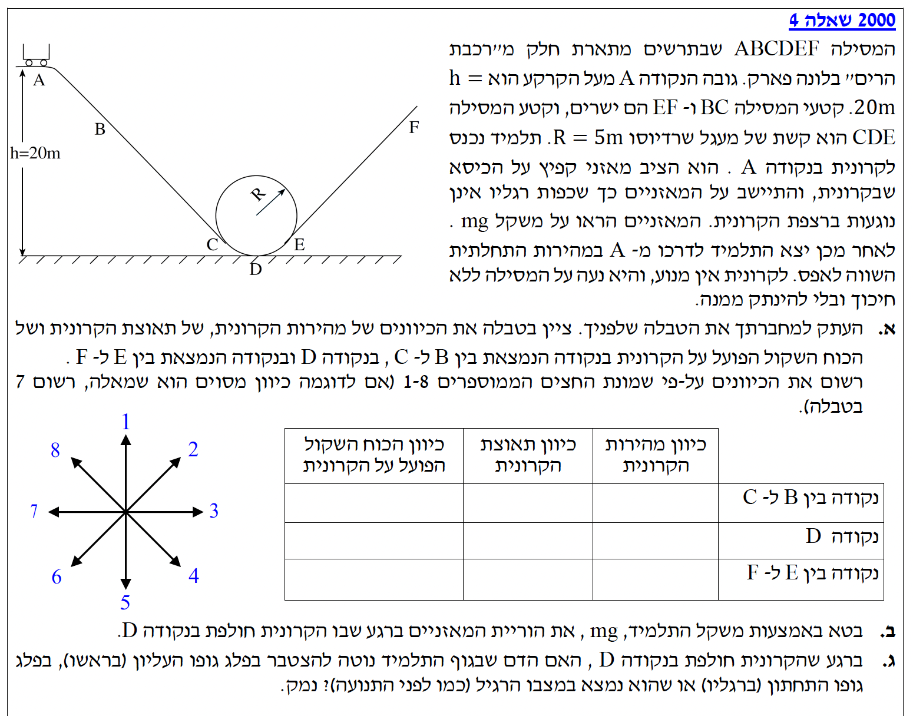
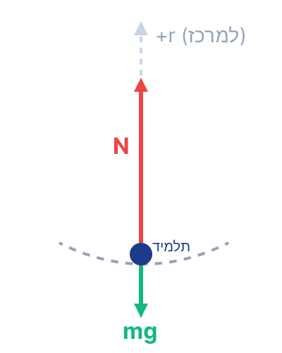

פתרון מודרך, מוסבר צעד-אחר-צעד

מה נתון: מסילה בעלת קטעים ישרים (BC, EF) וקשת מעגלית (CDE). הקרונית משוחררת ממנוחה מנקודה A וגולשת ללא חיכוך. לשם תיאור הכיוונים נשתמש בשושנת הכיוונים (1-8) המופיעה בשרטוט השאלה.
מה מחפשים: למלא את הטבלה הנתונה ולציין באמצעות מספרים (1-8) את כיוון המהירות, כיוון התאוצה וכיוון הכוח השקול הפועל על הקרונית בכל אחד משלושת המקטעים המבוקשים.
ננתח כל קטע בנפרד:
| כיוון מהירות הקרונית | כיוון תאוצת הקרונית | כיוון הכוח השקול הפועל על הקרונית | |
|---|---|---|---|
| נקודה בין B ל- C | 4 | 4 | 4 |
| נקודה D | 3 | 1 | 1 |
| נקודה בין E ל- F | 2 | 6 | 6 |
מה נתון:
מה מחפשים: את הוריית המאזניים בנקודה D, כלומר את גודל הכוח הנורמלי \(N_D\), מבוטא באמצעות משקל התלמיד במנוחה, \(mg\).
שלב ראשון: מציאת מהירות התלמיד בנקודה D בעזרת שימור אנרגיה.
מכיוון שהקרונית נעה ללא חיכוך, הכוח היחיד שמבצע עבודה הוא כוח הכובד (הכוח הנורמלי של המסילה מאונך לתנועה ולא מבצע עבודה). לכן האנרגיה המכנית הכוללת נשמרת בין נקודה A לנקודה D:
נציב את הביטויים (כאשר בנקודה D הגובה הוא אפס ולכן \(U_{G,D}=0\), ובנקודה A המהירות היא אפס ולכן \(E_{k,A}=0\)):
נצמצם את המסה \(m\) ונחלץ את ריבוע המהירות \(v_D^2\):
נציב את הנתונים \(g = 10\text{ m/s}^2\) ו- \(h = 20\text{ m}\):
שלב שני: דינמיקה בנקודה D.
בנקודה D, התלמיד נע במסלול מעגלי ולכן יש לו תאוצה רדיאלית המכוונת למרכז המעגל (כלפי מעלה). נצייר תרשים כוחות (FBD) על התלמיד ונבחר ציר \(y\) חיובי כלפי מעלה (לכיוון מרכז המעגל).

נרשום את משוואת החוק השני של ניוטון בציר הרדיאלי:
נבודד את הכוח הנורמלי \(N\), שהוא הוריית המאזניים:
נציב את הערכים המספריים: \(v_D^2 = 400\) (מחישוב האנרגיה) ו- \(R=5\text{ m}\):
מכיוון שידוע לנו ש- \(g = 10\text{ m/s}^2\), נוכל להציג את האיבר \(80m\) כ- \(8 \cdot (10m) = 8mg\):
מה נתון: בנקודה D התלמיד נמצא בתאוצה רדיאלית חזקה מאוד כלפי מעלה. גודל התאוצה שמצאנו בסעיף הקודם הוא \(a = 8g\). מערכת הדם היא נוזל הנמצא בתוך גופו של התלמיד.
מה מחפשים: להסביר האם הדם נוטה להצטבר בחלק העליון (ראש) או בחלק התחתון (רגליים) של התלמיד כאשר הוא חולף בנקודה D, ולנמק זאת פיזיקלית.
גוף האדם אינו גוף נקודתי, והדם הוא נוזל הנמצא בתוכו. הקרונית מגיעה לנקודה D מתוך ירידה, ולכן יש לגוף ולדם מהירות ששואפת להמשיך מטה וקדימה. בנקודה זו, המושב מפעיל כוח נורמלי עצום כלפי מעלה שמועבר לשלד, ומשנה את כיוון תנועתו של התלמיד מ"למטה וקדימה" לתנועה מעגלית (המלווה בתאוצה חזקה כלפי מעלה).
על פי החוק הראשון של ניוטון (חוק ההתמדה), הדם הנוזלי שואף להמשיך בתנועתו המקורית כלפי מטה. בעוד השלד מואץ כלפי מעלה ומשנה את מסלולו, הדם מתמיד בתנועתו מטה עד שהוא "נתקל" בתחתית הגוף. כתוצאה מכך, הדם יצטבר בפלג הגוף התחתון, עד שדפנות כלי הדם יפעילו עליו מספיק כוח כדי לעצור את תנועתו היחסית מטה ולהאיץ גם אותו כלפי מעלה יחד עם שאר הגוף.